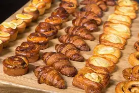

Welcome to Sweet Crumbs!
We bake fresh cakes, cupcakes, bread, pastries and custom celebration cakes daily.

Handcrafted with love in Ga-Molekana, Limpopo. Visit us for a taste of home.
We bake fresh cakes, cupcakes, bread, pastries and custom celebration cakes daily.

Handcrafted with love in Ga-Molekana, Limpopo. Visit us for a taste of home.